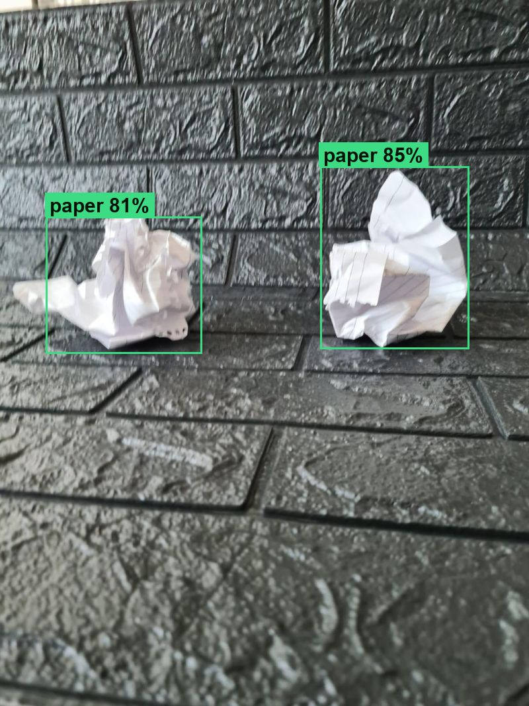
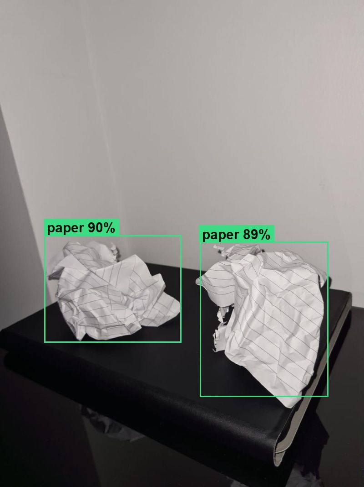
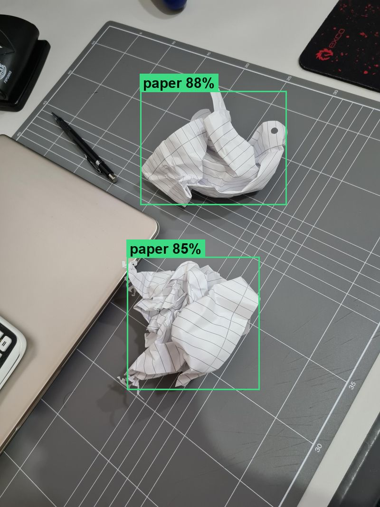
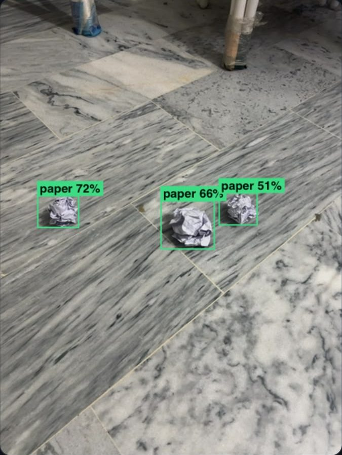
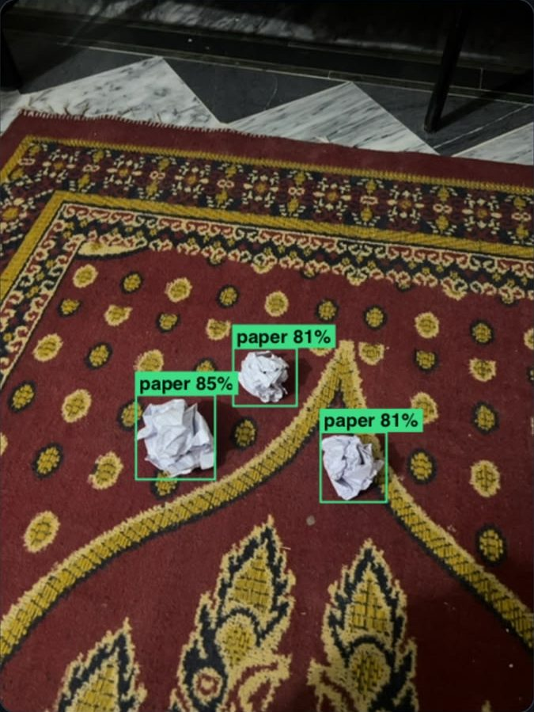

Live Paper-Ball Detector
A YOLO11n model from my Embedded AI Paperball Collector project, running entirely in this browser. No picture leaves your phone.
GitHub repositoryGitHub Models and resultsModels Training code and datasetCode





Example results
Start the camera to detect paper balls.
-paper balls
-ms / frame
-frames / s
Loading model...
How to test
- Hold the phone low and level, like the robot's camera, and look at a paper ball on the floor.
- Then point it at things that are not paper balls: other balls, socks, bags, white walls and floors. Any box there is a false detection. Lower the slider to see how weak those are.
- On a computer, "Pick photo" tests a single picture from a file.